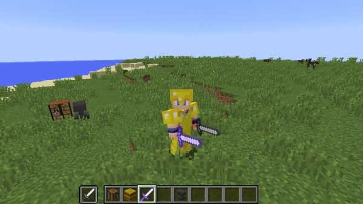

どんなエンチャントがいいの？
マイクラおすすめエンチャントランキング！
エンチャントって？
そんな人には！

エンチャントって？
第三位 修繕
マイクラは、すべての道具を作るためには資源が必要となります。
その中で貴重な資源を使って作るツールなどもあります。
そういうものは使いたいけどなかなか壊したくありませんよね？
ダイヤのツルハシに効率強化をつけると、
短い時間でも大量に掘れてしまうので、耐久力がついていたとしても割りとすぐに壊れそうになってしまいます。
そういうときには修繕を付けましょう！
それだけで遥かに長い間使用することもできます！
整地などでピッケル、シャベルを大量に使う・・・
そんなときもダイヤツールに修繕を付けておくだけで、長い間整地し続けることができますね！！(整地厨用じゃねえか)
2位 アンデッド特攻
マイクラの世界にはMobと呼ばれるプレイヤーに対して敵対するモンスターが数多く存在します。
そんな奴らをバッタバッタとなぎ倒していきたい・・・そんな人達を私は何人も見てきました。
そんな人達が必ずたどり着く境地・・・それがエンチャントにおけるアンデッド特攻の付与です！
なんでアンデッド特攻？と思われる方もいるでしょう。
その理由は、基本的にエンカウントするモンスターというのはゾンビやスケルトンなど、アンデッドのモンスターが多いからです。アンデッド系のモンスターのみにおいてはダメージ増加よりもアンデッド特攻のほうがダメージ量が増えるので、１本は持っておきたいエンチャントですね。(ダメージ増加とアンデッド特攻両方ついていたらなおよし！)
バージョン1.9から振りの速度は遅いものの、斧の攻撃力が大幅に増加し、ツールの中で最高の攻撃力を誇るように。
さらに剣は従来の攻撃力に加え横薙ぎ攻撃に変更、そのため複数の敵にダメージを与えることができます。
更には遠距離攻撃の弓・・・このように攻撃にもバリエーションが増えてきましたが、やっぱりずっと狩りをしているうちに攻撃力が物足りなくなってくることでしょう・・・
そういうときにこそアンデッド特攻です！
これを付けた武器を使い、良い狩りライフを過ごしてください！(なんかゲーム変わってないかこれ)
第一位 効率強化
第一位は効率強化です！
効率強化は整地や資材確保など、地道に積み上げるプレイが非常に重要になっています。
そのなかで効率強化のエンチャを行うのは純粋な時間短縮となります。
ピッケルはもちろん、斧やシャベルなどにもおすすめです。
ただし、採取スピードが上がる分耐久力の減りが早いのでダイヤや鉄などの耐久力のあるものにエンチャしてみましょう(最後が一番文章少ないのね)